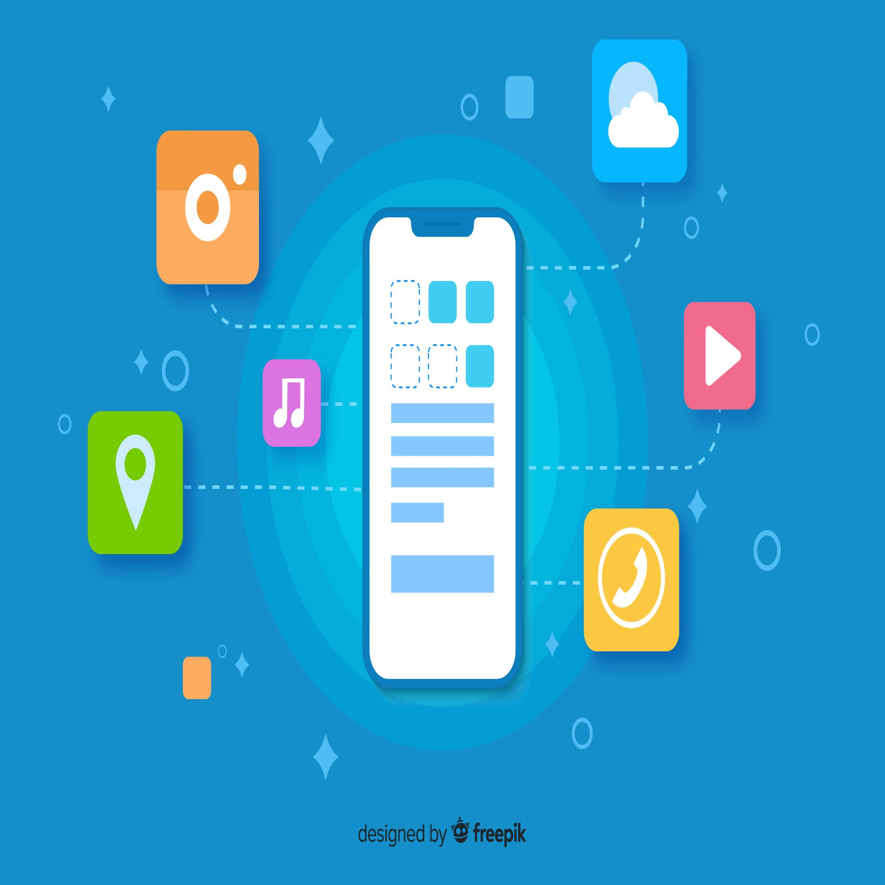
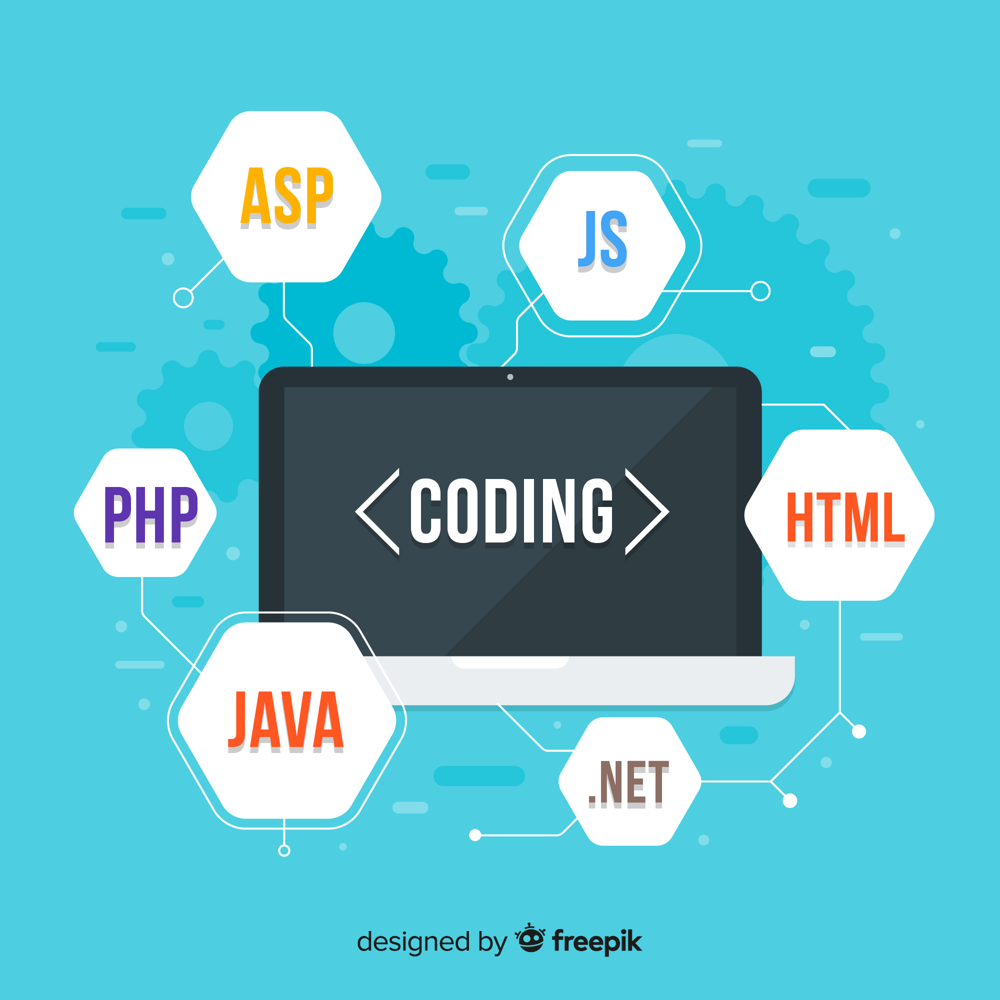

Urtimate
Urtimate
Web And Mobile Applications
Phasellus non pulvinar erat. Fusce tincidunt nisl eget ipsum.
Web & Mobile Applications
Morbi mattis mi consectetur tortor elementum, varius pellentesque velit convallis. Aenean tincidunt lectus auctor mauris maximus, ac scelerisque ipsum tempor. Duis vulputate ex et ex tincidunt, quis lacinia velit aliquet. Duis non efficitur nisi, id malesuada justo. Maecenas sagittis felis ac sagittis semper. Curabitur purus leo, tempus sed finibus eget, fringilla quis risus. Maecenas et lorem quis sem varius sagittis et a est. Maecenas iaculis iaculis sem. Donec vel dolor at arcu tincidunt bibendum. Interdum et malesuada fames ac ante ipsum primis in faucibus. Fusce ut aliquet justo. Donec id neque ipsum. Integer eget ultricies odio. Nam vel ex a orci fringilla tincidunt. Aliquam eleifend ligula non velit accumsan cursus. Etiam ut gravida sapien. Morbi mattis mi consectetur tortor elementum, varius pellentesque velit convallis. Aenean tincidunt lectus auctor mauris maximus, ac scelerisque ipsum tempor. Duis vulputate ex et ex tincidunt, quis lacinia velit aliquet. Duis non efficitur nisi, id malesuada justo. Maecenas sagittis felis ac sagittis semper. Curabitur purus leo, tempus sed finibus eget, fringilla quis risus. Maecenas et lorem quis sem varius sagittis et a est. Maecenas iaculis iaculis sem. Donec vel dolor at arcu tincidunt bibendum. Interdum et malesuada fames ac ante ipsum primis in faucibus. Fusce ut aliquet justo. Donec id neque ipsum. Integer eget ultricies odio. Nam vel ex a orci fringilla tincidunt. Aliquam eleifend ligula non velit accumsan cursus. Etiam ut gravida sapien.
- Admin Panel Kami menawarkan konsultasi IT yang mengkhususkan diri dalammemberikan solusi system computer secara lengkap dari berbagaitingkatan mulai dari saran sederhana sampai dengan design danimplementasi system yang ideal
- Content Management System Untuk mencapai target atas investasi Teknologi yang diinginkan , proyek anda harus berhasil tepat waktu dan sesuai anggaran . Kedengarannya sederhana – tetapi tanpa manajemen proyek yang tepat, kadang sulit dicapai. Itu sebabnya kami menempatkan Manajemen Proyek dan konsultasi di bidang Teknologi kepada pelanggan kami.
- SEO Friendly Team kami dapat berdiskusi dengan anda, mengenai aplikasi server apakah yang tepat dan sesuai untuk kebutuhan penunjang bisnis diperusahaan anda. Dan tentunya kami akan tetap menjaga performa server tetap optimal dan aman. Yang pasti server sangat terkait dengan kebutuhan backup rutin baik untuk sistem maupun seluruh data yang ada didalamnya.
- Restfull API Seperti kita ketahui hampir seluruh gangguan virus, kebocoran data, penurunan performance komputerisasi diakibatkan oleh penyebaran/aktifitas melalui jaringan lokal maupun internet. Untuk itulah, sangat penting jika penerapan/pemasangan jaringan komputer harus selalu mempertimbangkan aspek keamanan atau perlindungannya.
- UI/UX Penerapan sistem teknologi pada perusahaan tidak akan dapat dikendalikan dengan baik apabila tidak tersedianya data/informasi. Data atau informasi itu biasanya akan disediakan oleh sistem dokumentasi.
- Frameworks Programming Penerapan sistem teknologi pada perusahaan tidak akan dapat dikendalikan dengan baik apabila tidak tersedianya data/informasi. Data atau informasi itu biasanya akan disediakan oleh sistem dokumentasi.